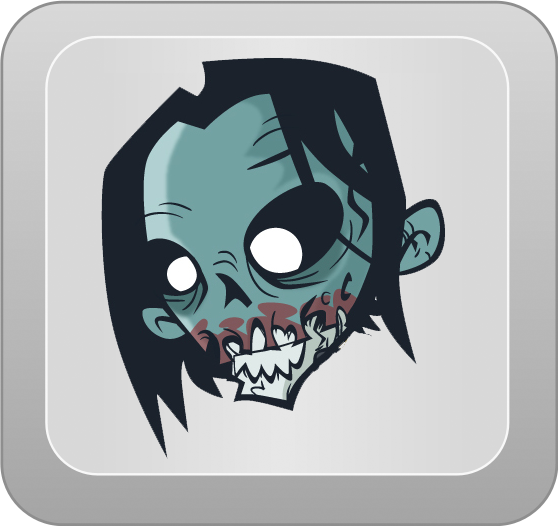
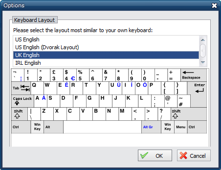

zombie keys
| Home Getting Started Details and Version History Key Locales Screenshots Contribute Bugs + Feature Requests |
Screenshots and Procedures
- ZombieKeys Icon
- 
- Zombiekey Toolbar Menu
-
- Position the cursor where you want the Diacritic to apear.
- .. click on an entry from the Zombiekeys menu
- .. continue typing the letter into the current Edit Box.

- Configuration Screen
-
- Simply select a layout
 - .. then press Ok
- Simply select a layout